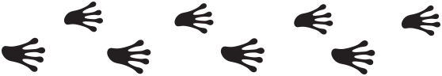

Muy pronto a la venta
Estamos preparando la venta de entradas.

Píntega Conf es la evolución de Lareira Conf: un punto de encuentro para todas las personas apasionadas por la tecnología.
Queremos reunir a las comunidades técnicas y a gente de todas las edades y trayectorias (estudiantes, desarrolladores, perfiles técnicos y de gestión) para aprender, compartir experiencias y conectar.
La píntega es la salamandra en gallego: la mascota de esta nueva etapa.
Estamos preparando la venta de entradas.
Cubrimos viaje y hotel, entrada full-pass y cena del post-evento. Tu charla se graba y se difunde.
Propón tu charlaCuatro niveles: Dragón, Basilisco, Tritón y Ajolote. Pídenos el dossier y hablamos.
Quiero patrocinar